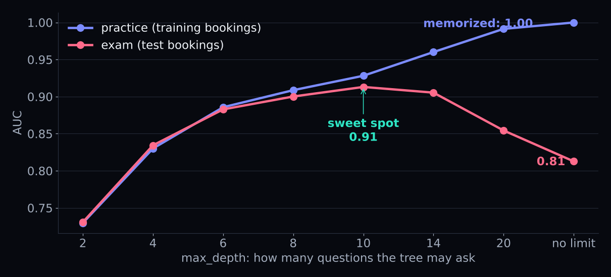
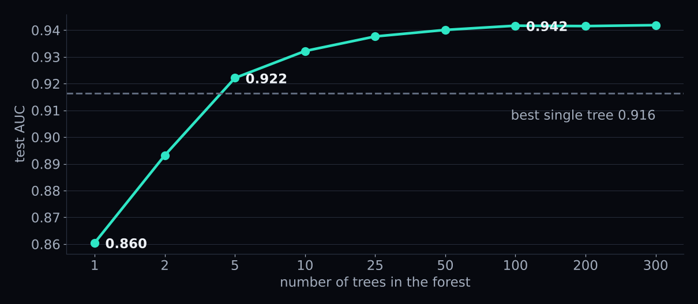
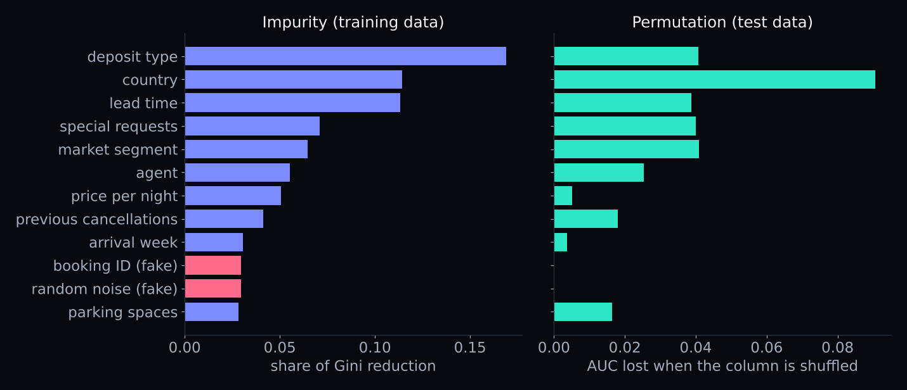
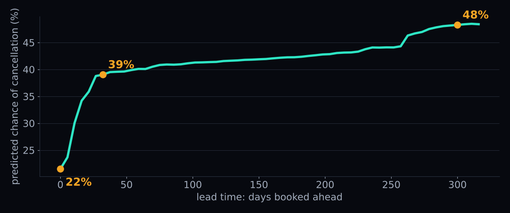
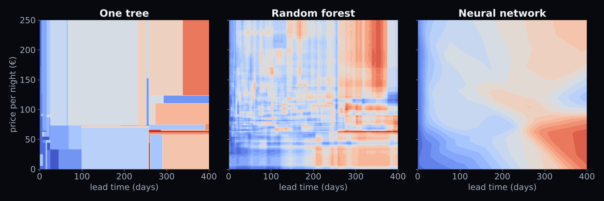
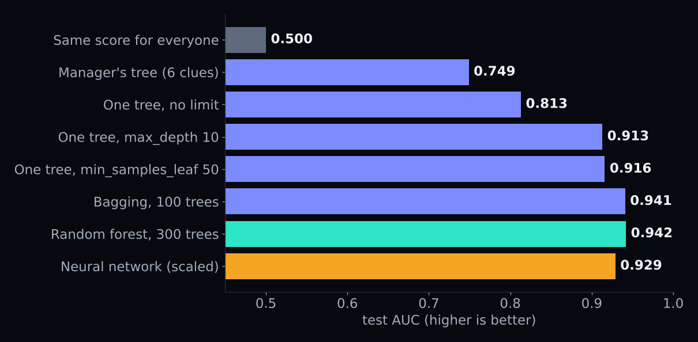

ISOM 835 · SESSION 7
ISOM 835 · Session 7 · Mon Nov 2
Will this guest show up?
Decision trees & random forests
Prof. Hasan Arslan · 5:00–7:30 PM
Tonight
One tree, then three hundred
5:00The data & the leaksWhich columns are cheating?
5:20How a tree asks20 Questions, Gini
5:40Too many questionsOverfitting, two brakes
6:15The forestWisdom of the crowd
6:45Which clues matterTwo answers that disagree
7:00Neural networksThe bridge
7:10Your turnA forest on Kaggle tonight
Why this matters
More than 1 in 3 bookings get canceled
Overbook too little
Empty rooms
A late cancellation leaves a room nobody pays for.
Overbook too much
A guest with no room
You pay for a room at another hotel, and lose a customer.
Getting it right starts with one number per booking:
how likely is this booking to be canceled?
Frame it
You are the revenue manager
Target
Canceled? 1 / 0
37% of bookings cancel.
Decision
Overbooking & deposits
Grade
AUC
0.5 = coin flip · 1.0 = perfect. Same as Kaggle.
Meet the data · two hotels in Portugal
83,573 bookings · 32 columns · 37% canceled
lead_time
days booked ahead
deposit_type
none · non-refundable · refundable
previous_cancellations
has this guest canceled before?
special requests
a crib, a quiet room…
The same data as our Kaggle competition. Tonight goes straight into your submission.
Before any model · leaks
Predicting the game with tomorrow's newspaper
| reservation_status | stayed | canceled |
|---|
| Check-Out | 52,616 | 0 |
| Canceled | 0 | 30,128 |
| No-Show | 0 | 829 |
Drop it, its date, and assigned_room_type (known only at check-in).
The test: would I know this at the moment I predict?
Good news
Trees need no scaling and no one-hot
- A tree only asks "is lead time more than 30 days?" Same answer in days or in weeks.
- Text becomes code numbers with a small dictionary: City Hotel → 0, Resort Hotel → 1.
- The prep station: fill blanks, turn text into codes. That's it.
Step 1 · how a tree thinks
Remember 20 Questions?
"Is it an animal?" "Does it fly?" Each answer cuts the possibilities.
A decision tree is a flowchart of yes/no questions, learned from data.
The manager's tree · 6 clues, 3 questions
A model you can print on one page and hand to a manager.
Read the tree out loud
Three stories a manager already half-knows
Non-refundable deposit
99%
cancel. Backwards! Why cancel after paying? Ask why, in your memo.
Booked ≤ 7 days ahead
9%
cancel. Last-minute guests show up.
Canceled before
96%
cancel again (booked 2+ weeks ahead). Past behavior repeats.
Step 2 · how does it pick the question?
Gini: pick two guests at random
What's the chance that one cancels and the other doesn't?
Everyone cancels
0
Perfectly pure.
Our hotel · 37% cancel
0.47
Very mixed.
50 / 50
0.50
As mixed as it gets.
Gini = 2 × p × (1 − p)
The audition for the first question
The biggest drop in Gini wins
| question | YES box | NO box | Gini after |
|---|
| Non-refundable deposit? | 99% cancel | 29% | 0.361 |
| Canceled before? | 92% | 34% | 0.434 |
| Booked ≤ 7 days ahead? | 10% | 43% | 0.438 |
Started at 0.468. The tree is greedy: the best question now, no planning ahead.
🧠 Quick check · 20 seconds
Which box is more mixed?
…and which one would the tree rather find?
Step 3 · a tree that asks too many questions
The memorizer is back

No limit: 2,938 leaves for 24,000 bookings. Perfect on practice, 0.81 on the exam.
Two brakes
Stop the tree before it memorizes
max_depth = 10
At most 10 questions
0.913
min_samples_leaf = 50
Every rule backed by ≥ 50 guests
0.916
274 leaves instead of 2,938.
A manager would never write a policy based on one guest.
Break · 10 minutes
☕
Back at 6:15. Then: why one tree is fragile, and how 300 fix it.
Step 4 · the hidden weakness
Two trees, two random halves of the same data
21%
of test bookings get "will cancel" from one tree and "will stay" from the other.
That's high variance: the answer swings with the luck of the data.
The wisdom of the crowd · Plymouth, 1906
787 fairgoers guess the weight of an ox
Most guesses were far off. Their errors pointed in different directions, and cancelled out.
Francis Galton, "Vox Populi", Nature, 1907
Step 5 · random forest
A crowd of trees, with two tricks
Trick 1 · bootstrap
Each tree studies different guests
Pull names from a hat, put each back. Some twice, a third never.
Trick 2 · random clues
Each question sees a random handful of clues
No tree can lean on deposit type every time.
If 300 advisors read the same newspaper, they're no wiser than one.
What the crowd buys you
Better, and steadier
Best single tree
0.916
test AUC
Random forest · 300 trees
0.942
no tuning, no scaling
Two forests disagree on
4%
How many trees?
More trees never hurt. They just take longer.

Free exam: out-of-bag AUC 0.939 vs test AUC 0.942. Each booking graded by the trees that never saw it.
Step 6 · which clues matter?
Two answers, and one gets fooled

Red bars are fake clues we planted. Impurity likes them. Shuffling them changes nothing.
The rule
Report permutation importance on test data
- Impurity: "how much did this clue help on the training data?" ID-like columns offer thousands of cut points, and some look good by luck.
- Permutation: "scramble this column on new bookings. How much worse does the model get?"
- Your manager asks "what drives cancellations?" Give the permutation answer.
Step 7 · which way does a clue push?
Lead time: the danger starts early

Special requests: 45% → 27% with one or more · Canceled before: 36% → 66%
⚠️ Same warning as Session 6
Describe. Don't claim causes.
"Guests who make special requests cancel less" is a pattern.
It does not mean that asking every guest for a request would cut cancellations.
Step 8 · the bridge to neural networks
A tree asks about one clue.
A neuron asks about a mix.
A tree's question
"Is lead time more than 14 days?"
One column. A hard yes / no. Chosen greedily, one box at a time.
A neuron's question
"Is 0.8 × lead time − 0.3 × price + 2 × requests more than 5?"
A weighted mix. A soft answer from 0 to 1. All weights learned together.
Stack layers of neurons and the network invents its own clues.
Same two clues · three ways to carve the map
Rectangles, a patchwork, and curves

Blue = stays · red = cancels
What carries over · and who wins on tables
Same lessons. Forests still win on tables.
Overfitting
Big networks memorize too
Brakes: early stopping, weight decay.
The crowd
Dropout
Switch off random neurons while training: many "thinned" networks averaged.
Explaining
Permutation works on any model
Shuffle a column, watch the score.
Network, scaled + one-hot
0.929
Tonight's leaderboard · test AUC
From a coin flip to a forest

One tree or a forest?
Pick the tool for the job
One decision tree
A rule a person can follow
Print it on one page. Good with a brake (0.92). Fragile.
Random forest
The best predictions, fast
0.94 with no tuning. Steady. Explain it with permutation importance and partial dependence.
Neither needs scaling or one-hot.
Your turn · in the notebook
Four questions, Step 9
- Leak test. Put assigned_room_type back. How much does AUC change? Would you know it at booking time?
- Two brakes at once. max_depth + min_samples_leaf. Can a single tree beat 0.916?
- Competition. A random forest in the Competition Starter, submitted tonight.
- Challenge. The decorrelation dial: max_features.
Competition · tonight
Swap one cell, gain six points of AUC
# Competition Starter, Section 2: replace the prep + model cell
prep = ColumnTransformer([
('num', SimpleImputer(strategy='constant', fill_value=-1), num),
('cat', Pipeline([
('imp', SimpleImputer(strategy='constant', fill_value='missing')),
('codes', OrdinalEncoder(handle_unknown='use_encoded_value',
unknown_value=-1))]), cat)])
model = Pipeline([('prep', prep),
('clf', RandomForestClassifier(n_estimators=300,
min_samples_leaf=5, n_jobs=-1))])
Logistic baseline ≈ 0.89 → random forest ≈ 0.95 (5-fold, all 83,573 bookings)
The full cell, with imports: notebook Step 9, Q3
Coming up
What's due
- Tonight, Mon Nov 2, 11:59 PM · Project Milestone 1: your problem and dataset, one paragraph
- Mon Nov 9, 4:30 PM · Competition leaderboard closes · same predictions file on Canvas
- Mon Nov 9, 11:59 PM · One-page competition memo: what you tried, what leaked, and why
- Mon Nov 16, 11:59 PM · HW3: thresholds (Session 5) + Ames regression (Session 6)
- Read ISLP 8.2.3 (Boosting) before next class
Four things to remember
Tonight in four lines
- A tree is a flowchart of questions learned from data. Easy to read, easy to overfit: use a brake.
- A forest is a crowd of different trees. Different mistakes cancel; more trees never hurt.
- Report permutation importance, and show the shape with partial dependence. Describe, don't claim causes.
- A neuron asks about a mix of clues. Same lessons, but on tables, forests still usually win.
Next Monday: gradient boosting, trees that learn from each other's mistakes.